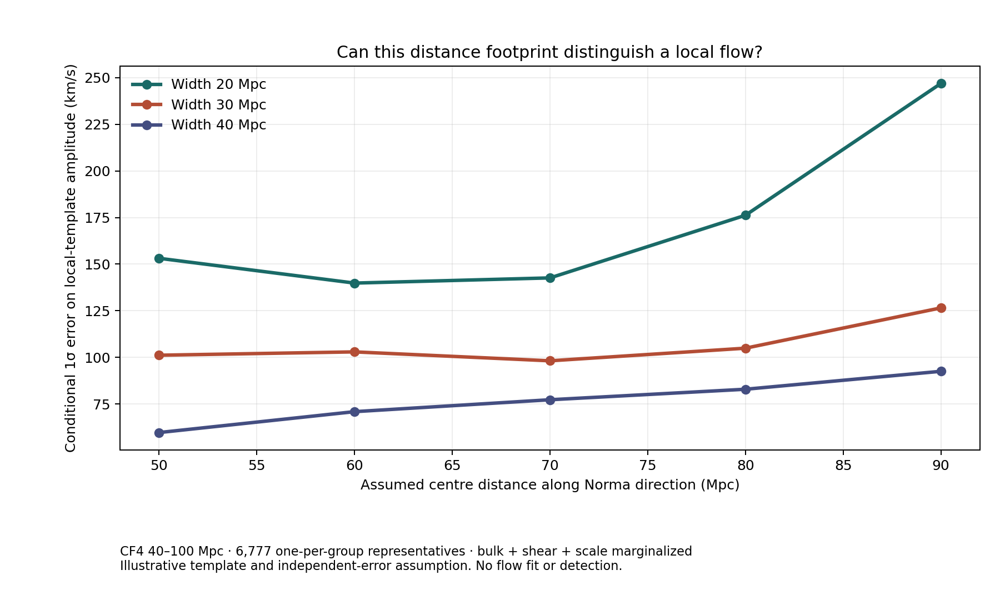

Distance modulus
We use each CF4 group's selected representative position, published combined modulus and quoted marginal error. The approximate response is δμ ≈ −(5/ln 10)δu/(H₀D), conditional on H₀ = 70 km/s/Mpc.
GREAT ATTRACTOR / CONDITIONAL DESIGN TEST
Real survey positions. Explicit competing motions. A sensitivity forecast, not a detection.
The question is whether current independent distance measurements can separate a localized inward-flow pattern near Norma from external bulk motion, shear and a global distance-scale shift.
01 / WHAT THE REAL FOOTPRINT COULD RESOLVE
Each curve changes the assumed spatial width of the localized flow. The height is the expected one-sigma amplitude error after removing the best-matching bulk, shear and scale signal.

INSPECT A PRECOMPUTED HYPOTHESIS
Select the centre and width of the illustrative inward-flow template. The readout comes from the checked-in calculation; changing it does not refit galaxy observations.
93.3% of the raw template information remains after projection onto nuisance motions.
Loading the reproducible scenario grid…
02 / WHAT WENT INTO THE NUMBER
We use each CF4 group's selected representative position, published combined modulus and quoted marginal error. The approximate response is δμ ≈ −(5/ln 10)δu/(H₀D), conditional on H₀ = 70 km/s/Mpc.
A three-component uniform flow, five-component trace-free shear and one unrestricted global modulus offset are projected out before calculating information on the local template.
Quoted per-record σμ is combined with an assumed 250 km/s independent small-scale scatter. Inter-group calibration and spatial covariance, selection and template errors are absent; the resulting sensitivity may be too optimistic.
A CHECK AGAINST FALSE PRECISION
Treating all 8,861 records as independent gives 85.65 km/s; one representative per published group gives 98.14 km/s. Assumed small-scale scatter of 150–400 km/s moves that result from 92.89 to 107.53 km/s. Excluding Tully–Fisher-associated representatives leaves 1,730 and weakens it to 168.20 km/s. Method masks indicate presence, not independent method-specific distances. These are conditional coverage tests.
WHAT WOULD BE REQUIRED NEXT
Use a density-derived template, coherent frame and selection-aware forward likelihood. Propagate shared anchors and spatial covariance, inject competing fields into mocks, and evaluate predictions on held-out group and method blocks. A Planck CMB image cannot substitute for those measurements.
REPRODUCE AND CHALLENGE THE RESULT
The complete CF4 table and provenance are available in the catalog explorer. The linked methods note spells out the field, derivatives, cuts and limitations; the JSON contains every precomputed scenario.
Data: Tully et al., Cosmicflows-4. Related approaches: CF4 forward modelling and 2MRS–CF4 comparison. This project does not claim the flow-decomposition method is new.